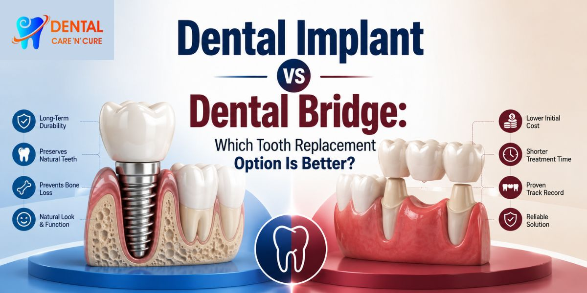

Our Location
Our Location
1st Floor, D2, Shubham Enclave, Paschim Vihar, New Delhi - 110063
 +91- 9310999214
+91- 9310999214
Call for free consultation
Dental Implant vs Dental Bridge: Which Tooth Replacement Option Is Better?
Losing a tooth can leave you with a surprisingly long list of questions. Should you replace it? Is a bridge enough? Is an implant worth the extra time? And, most importantly, bridge vs implant: which one actually makes more sense for you? If you're considering Dental Implant treatment in Paschim Vihar, the answer depends on your teeth, gums, jawbone, budget, and how you want the replacement to function. Dental Care 'N' Cure offers dental implants and tooth bridges in Paschim Vihar, where a dentist can assess your mouth and discuss suitable tooth replacement options.
There isn't one winner for everyone. A dental bridge may be practical in one situation, while a dental implant may make more sense in another. The trick is understanding what each treatment involves before choosing.

Dental Bridge vs Dental Implant: What's the Difference?
Both treatments replace a missing tooth, but they go about it differently.
A dental bridge uses the teeth next to the gap, or, in some designs, implants, as support for an artificial tooth. A conventional tooth-supported bridge usually involves preparing the adjacent teeth so the bridge can be attached to them.
A dental implant replaces the root of a missing tooth with an implant post placed into the jawbone. Once the implant has integrated with the bone, a dental crown is attached to complete the replacement tooth. Implants can also support bridges or dentures when several teeth are missing.
So when people search for implant vs bridge, they're really comparing two different approaches to the same basic problem: replacing a missing tooth while restoring chewing function, appearance, and comfort.
How Does a Dental Bridge Work?
A dental bridge literally bridges the space created by a missing tooth.
In a conventional fixed dental bridge , the artificial tooth sits between supporting crowns attached to neighboring teeth. Those supporting teeth become the abutment teeth for the restoration. Some bridges use an adhesive design and require little or no preparation of the adjacent teeth.
Benefits of a dental bridge
A bridge can be a useful missing tooth replacement when the neighboring teeth can provide suitable support. It does not require implant placement into the jawbone, and the treatment generally involves fewer surgical steps than an implant.
Another benefit is that a bridge can replace a tooth without waiting for osseointegration, the process through which an implant becomes integrated with the surrounding jawbone.
But there is a trade-off. A conventional bridge may require the dentist to reshape otherwise healthy natural teeth. That decision depends on the condition of those teeth, the bite, the size of the gap, and other factors.
How Does a Dental Implant Work?
A dental implant takes a different route. Instead of relying on neighbouring teeth, the implant acts as an artificial tooth root.
The dentist places a titanium implant post into the jawbone. During the healing period, the bone gradually integrates with the implant. This process is called osseointegration and provides a stable foundation for the final restoration.
After healing, an abutment connects the implant to the replacement tooth, usually a dental crown for a single missing tooth. The finished implant-supported restoration is designed to function as part of your bite.
Dental implants can also avoid the need to drill or reduce healthy adjacent teeth, which is one reason they appeal to many patients considering single tooth replacement.
Bridge vs Implant: Which Is Better?
Now we get to the question everyone really wants answered: tooth implant or bridge which is better?
There isn't a universal answer.
An implant may be attractive if you have suitable jawbone and healthy gums and want to replace a missing tooth without preparing neighbouring teeth. A bridge may make more sense when the adjacent teeth already need crowns, when an implant isn't suitable, or when you prefer a treatment that doesn't involve implant surgery.
Your dentist also needs to consider your bite, oral hygiene, gum health, remaining teeth, bone density, and overall dental condition.
In other words, choosing between a dental bridge vs. an implant shouldn't be like choosing between two products on a shelf. Your mouth gets a vote.
Dental Implant Benefits and Disadvantages
Dental implants have several potential advantages, but they're not magic screws that solve every dental problem.
A dental implant can:
- Replace a missing tooth without preparing adjacent natural teeth.
- Provide support for a crown, bridge, or denture.
- Help maintain the bone around the missing-tooth area.
- Restore chewing function and appearance.
- Provide a fixed tooth replacement that feels more like a natural tooth.
Possible disadvantages
Implants require surgery and a healing period. Treatment can take several months because the implant needs time to integrate with the jawbone. Some patients may also need bone grafting if there isn't enough bone available for implant placement.
There are also risks, including infection, damage to nearby structures, implant failure, and problems involving the tissues around the implant. Good oral hygiene and regular dental care remain important after treatment.
That is why implant candidacy needs a proper dental evaluation rather than a quick yes-or-no decision.
Dental Bridge Benefits and Disadvantages
Dental bridges have their own advantages.
A bridge can provide a fixed replacement for a missing tooth without placing an implant into the jawbone. Depending on the design and your dental condition, bridge placement may also be a practical way to restore the appearance and function of a missing tooth.
The main concern with a conventional bridge is the adjacent teeth. Supporting teeth may need to be prepared to hold the restoration. In some cases, preparing a tooth can affect its nerve and may eventually lead to the need for root canal treatment.
A bridge also does not replace the root of the missing tooth, so it doesn't provide the same type of stimulation to the jawbone as an implant.
Bridge vs Implant Cost: What Should You Consider?
People often search for bridge vs implant cost, but price alone doesn't tell you which treatment offers better value.
The total dental bridge cost can depend on the number of teeth involved, the bridge material, the condition of the supporting teeth, and the complexity of the case. Dental implant cost can vary based on the implant system, crown, diagnostic work, surgical requirements, and whether additional procedures such as bone grafting are necessary.
An implant may involve more stages and a longer treatment timeline, while a bridge can involve fewer surgical steps. The cheapest option at the beginning isn't automatically the most suitable option over time.
Ask your dentist for a complete treatment estimate rather than comparing one procedure price with another.
Implant vs Bridge Recovery and Healing
The recovery experience differs because the procedures are different.
A dental bridge doesn't require implant surgery, although the supporting teeth and surrounding tissues may need time to settle after preparation and placement.
With an implant, the dental implant healing process includes osseointegration. The implant needs time to bond with the jawbone before the final restoration is placed. The exact timeline varies from patient to patient and depends on factors such as bone condition and whether additional treatment is needed.
If you're considering Guided Dental Implant Surgery in Delhi, ask the dentist how the implant position will be assessed and planned for your particular case. Dental implant assessment commonly includes a detailed examination and dental imaging to evaluate the available bone and important nearby structures.
What If the Tooth Can Still Be Saved?
Before deciding on any tooth replacement, make sure the tooth is actually beyond saving.
This is especially important if you have tooth pain or an infected tooth. A badly damaged tooth isn't automatically a tooth that needs extraction and replacement. Depending on the condition of the dental pulp, root, surrounding periodontal tissue, and remaining tooth structure, root canal treatment may allow the natural tooth to be preserved.
If you're wondering how do you know you need a root canal, symptoms such as persistent tooth pain, lingering sensitivity, pain when biting, or signs of infection can be reasons to seek a dental examination. A dentist or endodontist can assess the tooth and determine whether endodontic treatment is appropriate.
Replacing a tooth that could have been saved would be a rather expensive way to solve the wrong problem.
Which Option Is Right for You?
The best tooth replacement option depends on your individual situation.
A dentist may consider:
- The condition of your remaining natural teeth
- Gum health and periodontal tissue
- Available jawbone and bone density
- The location of the missing tooth
- Your bite and chewing function
- Your overall oral health
- Whether neighboring teeth need restoration
- Your preference regarding surgery and treatment time
- Your long-term maintenance commitment
A prosthodontist may also be involved when the case requires detailed planning for dental restoration and replacement teeth. Dental Care 'N' Cure is headed by Dr. Mansi Arora Punia, whom the clinic identifies as a prosthodontist and implantologist, and the practice provides both dental implants and bridges.
Also Read: How to Choose the Best Dental Clinic for International Patients Traveling Abroad
Why Proper Implant Planning Matters
Doing an implant properly starts with planning it properly.
If you choose dental implants, you will first receive a dental evaluation. Through this, your teeth and gums can be checked, a dental X-ray can be taken, the jawbone situation can be evaluated, and 3D imaging, like cone-beam CT, can be taken if necessary, which assesses the quantity of bone and identifies anatomical relationships with structures like nerves and sinuses.
"The main activity we carry out with implants is evaluating the mouth for possible problems and doing some planning to be able to place the implants and then doing any restoration like the crown, bridgework or denture that comes from the top," says Dental Care 'N' Cure.
By getting such an evaluation from a dentist who specializes in dental implant surgery before deciding, individuals considering treatment from Dental Implants Paschim Vihar can make an informed choice between an implant, a bridge, or another form of treatment.
Final Verdict: Bridge or Implant?
Which one should you get, a bridge or an implant?
If you only want a single missing tooth replaced and you don't want to prepare the healthy neighbouring teeth, and you have suitable bone and gum health, the dental implant could be an ideal solution. Though, if the implant is not suitable for you or you prefer a non-surgical approach, a dental bridge might provide a feasible alternative.
None of the options is automatically "better" for every patient.
What a correct choice is depends on your oral health, remaining teeth, gums, jawbone, bite, treatment objectives, and long-term maintenance needs.
If you are indecisive about which option is a better fit for you, contact Dental Care 'N' Cure now to book a dental consultation and talk to us about the tooth replacement option that best meets your requirements.